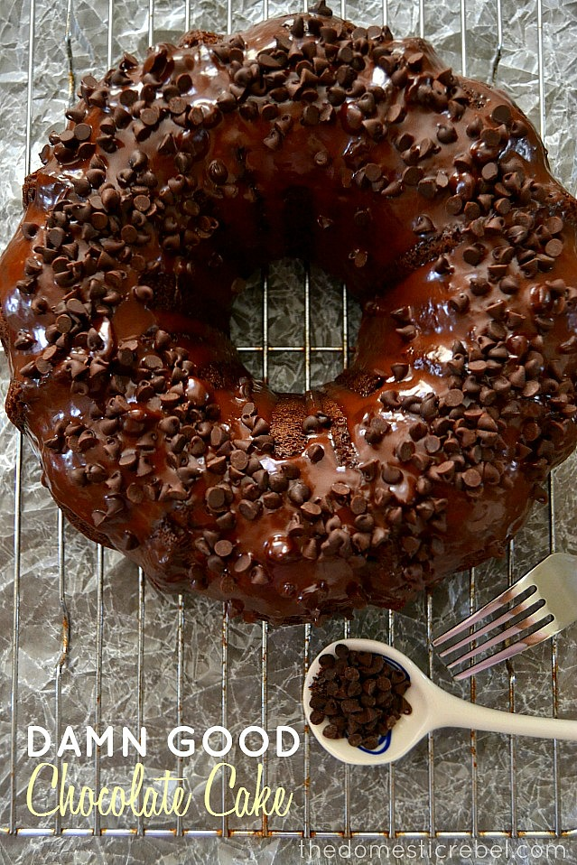

Damn Good Chocolate Cake

Description
This is the recipe for, arguably, the best cake I have ever eaten
in my entire life. It is right up there with the Pittsburgh famous
Prantl's almond torte for me. And, truthfully, I'm not much of a
cake person to begin with. But, somehow, this cake blows me away
every single time. Bear with me through the funky ingredients -
it will be worth it. Trust me.
Ingredients
- 1 box chocolate fudge cake mix
- 1 (3.4 oz) box instant chocolate pudding mix
- 4 eggs
- 1/2 cup vegetable oil
- 1 cup sour cream
- 1/2 cup buttermilk
- 1 cup semi-sweet chocolate chips
- Frosting of choice
- Sprinkles or miniature chocolate chips as topping
Steps
- Preheat oven to 350 degrees F. Liberally grease a large
bundt pan with cooking spray and set aside.
- In a large bowl, combine cake mix, pudding mix, eggs,
oil, buttermilk, and sour cream with a handheld electric
mixer on medium-low speed. Beat for 2 minutes or until
combined and smooth. Pour into prepared pan.
- Bake for approximately 45-55 minutes or until a
toothpick near the center comes out clean. Cool
completely before inverting onto a wire rack.
- Once cake has cooled completely, frost cake with the
icing or frosting of your choice. I typically use
store-bought vanilla frosting! Garnish with sprinkles
or miniature chocolate chips and you are ready to serve.